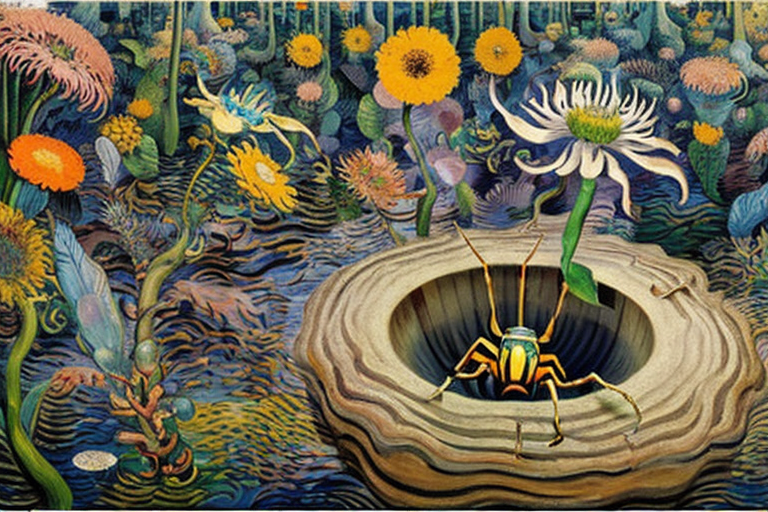
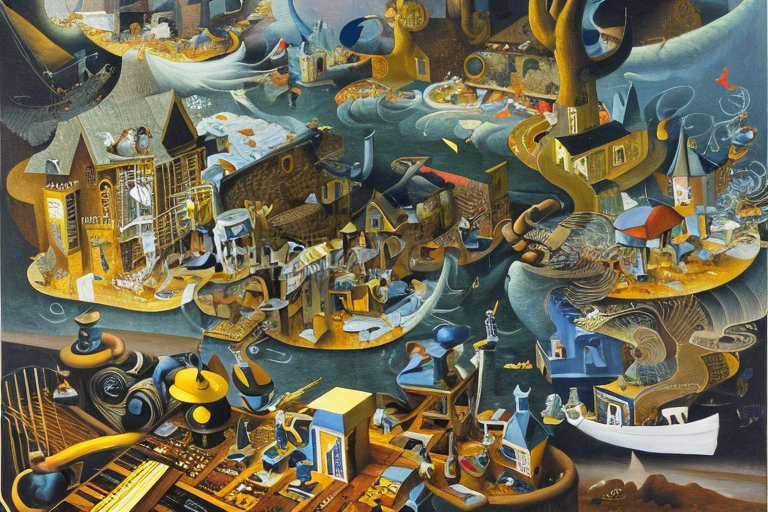
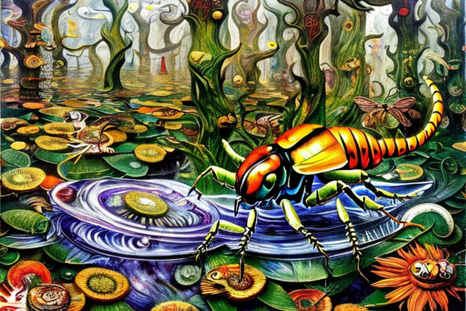

The parasitic wasp and the cancer cure
HOME
Table of Contents
The explosive rise of the market

The bull market was raging, and the Wall Street suits were throwing cash at anything that sounded like it had even the slightest chance of making them a buck. And then, they heard about the parasitic wasp with a sting that could cure cancer.
It was like throwing gasoline on the fire. Investors threw millions at the company that had discovered the wasp, hoping to cash in on the next big thing. And as the stock prices skyrocketed, nobody stopped to think about the risks.
But the wasp was no ordinary insect. It had evolved over millions of years to be a predator and a killer, and its sting contained a complex cocktail of chemicals that could paralyze even the toughest prey. The scientists at the company spent months analyzing the poison, trying to isolate the compound that was responsible for the cancer-curing effects.
It wasn’t easy. The poison was made up of hundreds of different chemicals, each one more complex than the last. But finally, they found it: a small molecule that had never been seen before. They named it “Waspoxin,” and the race was on to patent it and turn it into a blockbuster drug.
The company spent millions more refining the compound, testing it in animals and humans, and finally, after years of work, they had a drug that could cure cancer in nearly 90% of cases. The stock prices soared, and the executives and investors celebrated their success.
But then, the wasp struck back. In the wild, the wasp’s sting was only deadly to its prey. But in the lab, the researchers had accidentally created a new breed of wasp secreting stronger poison than usual. And when they accidentally released one of these mutant wasps into the wild, it quickly began to spread.
The wasps began to attack humans, and the results were catastrophic. The sting caused a reaction in the human body that was even more deadly than the cancer it cured. People died within minutes of being stung, and the world watched in horror as the stock prices of the company plummeted.
The ruthless raids

The news of the deadly wasps had spread far beyond the financial world, and it wasn’t long before a team of hunters was assembled to track down and eliminate the threat. Led by a grizzled veteran of the Amazon, the team set out into the jungle, armed with nothing but their wits and their weapons.
But the wasps were elusive. They lived in small, underground nests that were nearly impossible to find. And when they were disturbed, they would swarm out, attacking with a ferocity that left even the toughest hunters shaken.
The team spent days scouring the jungle, following the slightest clues to try to locate the nests. They tracked the wasps by their distinctive buzzing sound, which could be heard from hundreds of yards away. They looked for signs of disturbed earth, knowing that the wasps would burrow underground to hide their nests.
But the wasps were clever. They had evolved to be expert hiders, and they knew how to evade their enemies. They would build decoy nests, leading the hunters on wild goose chases through the jungle. And when they sensed danger, they would quickly retreat underground, leaving no trace of their presence.
Despite the challenges, the hunters were determined to succeed. They knew that the wasps posed a threat to humanity, and they were willing to risk everything to eliminate the danger. They developed new tactics, using drones and other technology to search for the nests from above.
Finally, after weeks of searching, they found their first nest. It was hidden beneath the roots of a giant tree, and it was protected by a swarm of angry wasps. The hunters approached cautiously, knowing that any misstep could mean certain death.
But they were prepared. They wore specialized suits that protected them from the stings, and they carried flamethrowers to burn out the nests. They worked quickly and efficiently, and soon the wasps were no more.
The team moved on, tracking down more nests and eliminating the wasps one by one. And as they worked, they learned more about the habits of the Vespula xanthoptera wasp. They discovered that the wasps were highly social, living in large colonies and working together to defend their nests.
They also learned that the wasps had a highly developed sense of smell, which they used to communicate with each other and to locate food. And they found that the wasps were highly adaptable, able to survive in a wide range of environments and climates.
The battle with the jungle monster

As the team of hunters delved deeper into the Amazonian jungle, they came across a creature that defied all explanation. It was a giant wasp, easily the size of a small car, with wings that beat so fast they were a blur. The hunters could hear the buzzing of the wings from a mile away.
The wasp was unlike anything they had ever seen before. Its body was covered in a thick, metallic armor that seemed impervious to bullets. Even when the hunters unleashed a barrage of gunfire, the wasp remained unscathed.
The hunters quickly realized that they were dealing with a creature that was beyond their understanding. They tried to retreat, but the wasp was too fast. It darted through the air with lightning speed, swooping down on the hunters with deadly precision.
The hunters scrambled to evade the creature, but it was no use. The wasp was too agile, too powerful. It seemed to anticipate their every move, cutting off their escape routes and attacking with a ferocity that left them shaken.
As the hunters fought for their lives, they began to notice something strange about the wasp’s movements. It was as if the creature was anticipating their every move, predicting their actions before they even made them.
And then they realized the truth. The wasp was communicating with the other wasps in its colony, using a complex system of pheromones and body language to coordinate its attacks. It was as if the wasp was part of a hive mind, a collective consciousness that transcended individual thought.
The hunters were amazed and horrified by what they had discovered. They had stumbled upon a creature that was beyond their understanding, a being that existed on a level of consciousness that was beyond human comprehension.
But even as they struggled to come to terms with this new reality, they knew that they had to continue the fight. They could not allow the giant wasp to escape into the wider world, where it could wreak havoc and destruction.
The hunters regrouped, coming up with a new strategy to take down the creature. They knew that conventional weapons were useless against the wasp’s armor, so they turned to science for a solution.
They developed a new type of ammunition, using a specialized alloy that was designed to penetrate the wasp’s armor. The bullets were expensive, but the hunters knew that they were their only hope.
They returned to the jungle, armed with their new ammunition and their newfound knowledge of the wasp’s hive mind. They engaged the creature in a fierce battle, firing their new bullets with deadly accuracy.
As the bullets struck the wasp’s armor, they sent sparks flying. The hunters watched in amazement as the creature faltered, its movements growing slower and less precise. It seemed to be losing its connection to the hive mind, its consciousness slowly fading away.
Finally, with a final burst of gunfire, the hunters brought down the giant wasp. It fell to the ground with a thud, its wings still beating weakly. And as the hunters approached, they could see the intricate patterns on its armor, the details of its anatomy that were beyond human comprehension.
The hunters stood in awe of the creature they had defeated, knowing that they had faced something that was beyond their understanding. And as they made their way back to civilization, they could feel the weight of their experience hanging heavily on their souls. For they knew that they had glimpsed something that was not meant for human eyes, something that belonged to a world beyond our own.
The panic of the investors

As news of the hunters’ encounter with the giant wasp spread, panic began to set in among the investors of BioWasp. They had poured millions of dollars into the company, believing that the Vespula xanthoptera wasp held the key to curing cancer.
But now, with reports of the giant wasp’s impervious armor and hive mind capabilities, investors began to lose faith in the company’s ability to deliver on its promises. The stock prices plummeted, wiping out billions of dollars in market value.
The executives at BioWasp tried to reassure their investors, insisting that the giant wasp was an anomaly, a freak of nature that was not representative of the species as a whole. They argued that the chemical structure of the wasp’s sting was still a breakthrough in cancer research, and that they were continuing to make progress in their studies.
But the investors were not convinced. They had lost faith in the company, and they began to sell off their shares in droves. The stock prices continued to fall, reaching record lows that threatened the very existence of BioWasp.
As the company struggled to regain its footing, rumors began to circulate about the true nature of the Vespula xanthoptera wasp. Some claimed that the creature was not of this world, that it had been sent to Earth by some malevolent force beyond human comprehension.
Others whispered about the hive mind capabilities of the wasp, suggesting that it was a sign of a collective intelligence that threatened to swallow up all of humanity. And still others pointed to the impervious armor of the giant wasp, claiming that it was evidence of a biological weapon that had been designed for use against humanity.
The rumors only added fuel to the fire, causing the panic among investors to intensify. And as the stock prices continued to fall, the fate of BioWasp hung in the balance.
But despite the chaos and uncertainty, there were still some who believed in the potential of the Vespula xanthoptera wasp. They saw beyond the fear and the rumors, recognizing the true scientific breakthrough that lay at the heart of BioWasp’s research.
The therapeutic shield

As the panic surrounding the Vespula xanthoptera wasp began to subside, scientists at BioWasp began to shift their focus away from the creature’s sting and towards its armor.
Studies had shown that the giant wasp’s armor was composed of a complex matrix of chitin and protein fibers, woven together in a way that made it nearly impervious to bullets and other forms of physical damage. But it was not just its durability that made the armor so remarkable. Its unique chemical composition also made it an incredibly potent medicinal substance.
Researchers at BioWasp began to analyze the structure of the wasp’s armor in painstaking detail, using advanced imaging techniques to study its chemical properties. What they found was nothing short of astounding.
The wasp’s armor was rich in a variety of potent antioxidants, which had the ability to scavenge free radicals and prevent oxidative damage to cells. It was also packed with anti-inflammatory compounds, which had the ability to reduce inflammation and promote healing.
But perhaps the most remarkable aspect of the wasp’s armor was its ability to stimulate the production of stem cells. Stem cells are a type of cell that can differentiate into a variety of different cell types, making them incredibly valuable for regenerative medicine.
The researchers at BioWasp discovered that the wasp’s armor contained a complex cocktail of growth factors and signaling molecules, which had the ability to stimulate the production of stem cells in the body. They also found that the armor had the ability to induce the differentiation of stem cells into a variety of different cell types, including bone, cartilage, and muscle tissue.
As they continued to study the properties of the wasp’s armor, the scientists at BioWasp began to develop a range of new medical treatments based on its unique properties. They created creams and ointments that could be applied topically to promote wound healing, and injectable solutions that could be used to stimulate the growth of new tissue.
The use of the wasp’s armor in medicine quickly spread, and soon it became one of the most valuable substances on the planet. Hospitals and clinics around the world clamored for access to the new treatments, and the price of the armor skyrocketed.
But even as the world marveled at the incredible properties of the wasp’s armor, some could not help but wonder about the creature from which it had come. They wondered about the true nature of the Vespula xanthoptera wasp, and what other secrets it might hold.
And as they pondered these questions, they could not help but feel a sense of unease, a fear that perhaps the wasp was not the miraculous creature that it seemed to be. For they knew that the secrets of nature were often dark and dangerous, and that the true cost of progress was often paid in blood.